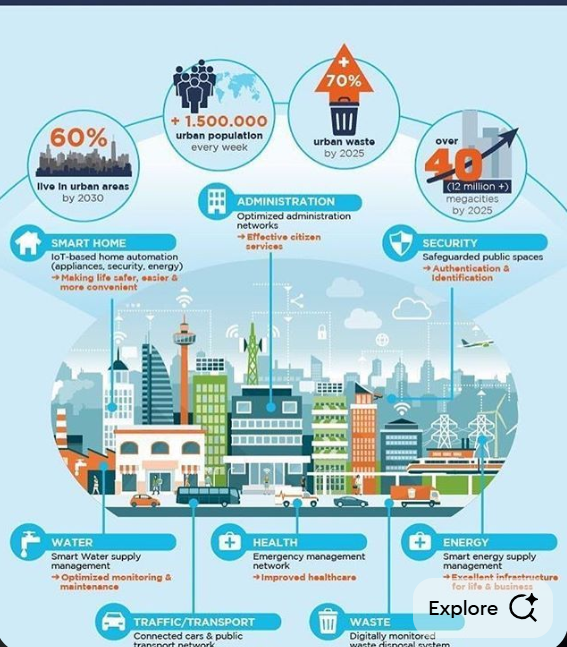

Tourism
Why I Chose the Tourism Sector
Tourism drives economic growth, creates jobs, and promotes culture. In smart cities, technology enhances tourist experiences by optimizing routes and managing attractions efficiently.
Discover Vritdhara
Culture • Cinema • Heritage • Nature
Cultural Emblem
Located at the center of the lake, representing the cultural identity and heritage of Vritdhara.
Eterna Studio (Rajapuri)
A large film city offering studio tours, film shoots, and cinematic experiences.
Vrithdhara Palace
Showcases royal architecture and stands as a symbol of heritage and historical pride.
National Park
Promotes eco-tourism, wildlife conservation, and a peaceful natural experience.
Current Problems in the Tourism Sector
- Overcrowding
- Long queues
- Safety concerns
- Lack of digital systems
- Waste management issues
- Poor navigation & confusing signs
- Disconnected local businesses

Why Innovation is Needed
Innovation is needed in the tourism sector to make travel smoother, faster, and safer. Traditional systems cannot handle overcrowding, long waits, or lack of real-time information. Modern tourists expect digital services, smart navigation, and personalized guidance. Smart solutions help reduce chaos, manage crowds, improve safety, and boost local businesses.
Tourism Sector Sub-Divisions
Tourism & Navigation System
The Tourism and Navigation System is designed to enhance the experience of travelers by providing comprehensive information about tourist destinations and facilitating seamless navigation...
1. Introduction and Problem Statement
Tourism plays a major role in economic development, but tourists often face difficulties navigating unfamiliar cities. Lack of local knowledge, traffic congestion, safety concerns, and inefficient routing can negatively impact the tourist experience. The Tourism and Navigation System aims to solve these problems by providing accurate, efficient, and reliable navigation assistance.
2. Tourist Flow and Conceptual Pre-Idea
- Destination planning before arrival
- Live location detection using GPS
- Navigation between tourist spots
- Safety and emergency access
- Experience feedback
3. System Architecture
The system consists of a tourist interface, GPS module, digital city map database, and a navigation engine. The navigation engine processes routing requests and provides optimized routes in real time.
4. Graph-Based Data Representation
The city map is modeled as a weighted graph where intersections represent vertices, roads represent edges, and distance or travel time acts as weights. This structure enables efficient shortest-path computation.
Role of Dijkstra’s Algorithm
Dijkstra’s algorithm calculates the shortest path from the tourist’s current location to the selected destination by considering distances or travel time as weights.
5. Dijkstra Algorithm Implementation
6. Real-Time Working of the Algorithm
As the tourist moves, the system continuously updates location data. If deviations or changes occur, the algorithm is re-executed to ensure optimal navigation.
7. SDG Alignment
- SDG 9: Innovation and Infrastructure
- SDG 11: Sustainable Cities
8. Use Case Scenario (Tourist Navigation)
9. Tourist Interaction Flow Diagram

Figure: Tourist Navigation System – User Interaction Flow
10. Advantages and Limitations
- Optimal route selection
- Reduced travel time
- Improved tourist safety
- Transparent algorithm logic
- Requires GPS and internet
- Less efficient for extremely large maps
11. Future Enhancement
Future improvements may include traffic prediction, AI-assisted personalization, integration with accommodation services, and emergency response optimization.
Accommodation
Accommodation and navigation are closely connected in tourism. Tourists need comfortable lodging and efficient routes to reach attractions, restaurants, and cultural sites. By integrating accommodation data with navigation, tourists can select lodging near points of interest, plan itineraries efficiently, and enjoy a seamless travel experience, while also contributing to the local economy.
1.Importance of Accommodationt
Accommodation is crucial for ensuring comfort, safety, and convenience for tourists. Quality lodging encourages longer stays and repeat visits, and directly impacts the perception of the city as a tourist-friendly destination. Diverse options, from budget hostels to luxury hotels, ensure that tourists of all types can find suitable lodging.
2.Stakeholder Responsibilities
- 🧳 Tourists: Select suitable accommodation, provide honest reviews, follow guidelines.
- 🏨 Hotels/Hostels/Resorts: Maintain accurate listings, hygiene, quality, amenities, and respond to feedback.
- 🍽️ Restaurants: Maintain food quality & hygiene, provide accurate location and timing, respond to reviews, collaborate with nearby accommodations.
- 🏙️ City: Use collected data for planning, tourism promotion, and sustainable economic growth.
3.Proposed Solution
Tourist accommodation is a critical component of the travel experience, providing safety, comfort, and convenience that directly influence satisfaction and duration of stay. By accessing a centralized system, tourists can explore a wide range of lodging options, filter them based on preferences such as price, rating, amenities, and proximity to attractions, and make informed booking decisions. Hotels and restaurants provide accurate information, maintain quality, offer essential amenities, and respond promptly to feedback. Their performance directly impacts tourist satisfaction and city reputation. Effective integration increases occupancy, boosts tourist spending, and generates employment. Data visualized via graphs—showing occupancy trends, price distributions, ratings, and tourist behavior—helps city planners and service providers optimize infrastructure and promotions. The accommodation system strengthens tourist experience, operational efficiency of hotels/restaurants, and contributes to sustainable economic growth.


Hotel Lobby: Modern, organized lobby representing high-quality accommodation facilities. Ensures comfort, convenience, and a positive first impression. Proper layout, cleanliness, and amenities enhance guest satisfaction and encourage repeat visits.

Homestay Experience: Personalized and cultural lodging offering tourists an authentic experience. Supports local communities, promotes cultural exchange, and allows visitors to enjoy comfort while connecting with local traditions.
4.Algorithms Supporting the System
i)Filtering Algorithm 🧰
This algorithm filters accommodations/restaurants by user preferences like price, rating, amenities, and location. It ensures tourists see only relevant options efficiently.
ii)Sorting Algorithm 📊
This algorithm sorts filtered accommodation results based on criteria such as price, rating, or distance, helping tourists identify the most suitable options.
iii)Recommendation Algorithm 🤖
Provides personalized recommendations based on tourist preferences, past bookings, and similar user behavior, increasing satisfaction and engagement.
iv)Analytics Algorithm 📈
Collects and visualizes data on occupancy trends, ratings, revenue, and tourist behavior to aid hotel managers and city planners in making informed strategic decisions.
5.Analytics & Insights
Occupancy Trend: Line graph showing monthly hotel occupancy. Peaks indicate high tourist influx, helping hotels optimize staffing, pricing, and services. City planners can enhance transport and infrastructure during peak months. Efficient occupancy management directly supports economic growth and improves overall tourist satisfaction.
Hotel Ratings: Bar graph showing distribution of hotel ratings. Helps tourists select high-quality accommodations and assists hotels in improving services. Higher-rated hotels attract more visitors, encouraging repeat tourism and boosting local revenue.
Price Distribution: Graph showing hotel pricing ranges. Tourists can plan budgets and select preferred options. Hotels can adjust pricing to attract diverse tourists, promoting inclusive tourism and supporting city-wide economic growth.
6.Advantages & Limitations
- ✅ Centralized information for tourists and service providers
- ✅ Improves booking convenience and satisfaction
- ✅ Personalized recommendations and analytics for business growth
- ❌ Real-time updates require internet & data maintenance
- ❌ Large datasets may slow filtering/sorting if not optimized
7.Future Enhancements
- AI-driven personalized recommendations and predictive pricing
- Eco-friendly and sustainable accommodation filters
- Dynamic availability updates & mobile notifications
- Integrated city-level analytics dashboard for economic planning
8.SDG Alignment
- 🌱 SDG 8: Promote economic growth and employment through tourism and hospitality
- 🏙️ SDG 11: Sustainable cities & communities
- 🍽️ SDG 12: Responsible consumption & production in accommodations and restaurants
- 🔮 Future: Integrate eco-friendly accommodations & AI-driven smart tourism for sustainability and inclusivity
Attractions
Vritdhara is home to unique cultural, cinematic, historical, and eco-tourism attractions. This framework highlights realistic business ideas, algorithms, visuals, and visitor analytics to grow tourism sustainably.
1. Attractions & Business Ideas
- 🏛️ Cultural Emblem: Guided tours, boat rides, cultural workshops, QR-info kiosks.
- 🎬 Eterna Studio (Rajapuri): Studio tours, interactive film-shoot experiences, merchandise, booking slots.
- 🏰 Vrithdhara Palace: Heritage tours, audio guides, heritage cafe, souvenir shop.
- 🌿 National Park: Wildlife safaris, birdwatching, eco-educational walks, nature photo contests.
2. Revenue Model
- Ticket sales (regular, guided, premium)
- Souvenir stores & local crafts
- Photo packages & studio experiences
- Event hosting (festivals, film fairs)
- Service partnerships (hotels, transport)
3. Realistic Algorithms
i) Merge_Sorting Algorithm 📊
ALGORITHM MergeSortAttractions(attractions, criteria)
BEGIN
// Step 1: Base case
IF LENGTH(attractions) <= 1 THEN
RETURN attractions
END IF
// Step 2: Divide the list
mid = LENGTH(attractions) / 2
leftList = attractions[0..mid-1]
rightList = attractions[mid..END]
// Step 3: Recursive sorting
sortedLeft = MergeSortAttractions(leftList, criteria)
sortedRight = MergeSortAttractions(rightList, criteria)
// Step 4: Merge sorted lists
mergedList = EMPTY_LIST
WHILE sortedLeft NOT EMPTY AND sortedRight NOT EMPTY
IF sortedLeft[0][criteria] >= sortedRight[0][criteria] THEN
mergedList.APPEND(sortedLeft[0])
REMOVE sortedLeft[0]
ELSE
mergedList.APPEND(sortedRight[0])
REMOVE sortedRight[0]
END IF
END WHILE
// Step 5: Append remaining elements
mergedList.APPEND(sortedLeft)
mergedList.APPEND(sortedRight)
RETURN mergedList
END
💡 Tip: For MergeSort, use it when you have more than 30 attractions; for smaller lists, simple sorting may be faster.
Purpose:
Efficiently sorts attractions by selected criteria (popularity, rating, distance) to help tourists prioritize their visits.
Inputs:
- attractions: List of attractions with metadata
- criteria: Popularity, rating, or distance
Benefits:
✅ Stable and efficient sorting (Merge Sort)
✅ Works well for large attraction lists
✅ Ensures visitors see the most relevant attractions first
✅ Can integrate with recommendation systems
ii) Recommendation Algorithm 🤖
Purpose:
Suggests attractions tailored to visitor interests, previous visits, popularity, and special events to improve satisfaction and engagement.
Inputs:
- userPreferences: Interests such as cultural, wildlife, heritage, film, etc.
- visitorHistory: Record of attractions already visited
- attractions: List of attractions with metadata (tags, popularity, special events)
Benefits:
✅ Personalized visitor experience
✅ Encourages exploring lesser-known attractions
✅ Promotes seasonal events
✅ Increases satisfaction and engagement
✅ Can integrate with apps and smart guides
iii) Analytics Algorithm 📈
Purpose:
Analyzes visitor trends, peak hours, monthly visitor patterns, and revenue per attraction to guide staffing, pricing, and event planning.
Inputs:
- visitorData: Records of visitor numbers, time of visit, and revenue per attraction
Benefits:
✅ Identifies peak visiting hours for better crowd management
✅ Helps optimize staffing and scheduling
✅ Monitors revenue trends per attraction
✅ Supports data-driven decision making for promotions and events
✅ Scalable for multiple attractions over different time periods
iv) Queue Management Algorithm ⏳
Purpose:
To manage visitor flow efficiently, reduce overcrowding, and improve visitor satisfaction by dynamically allocating time slots.
Inputs:
- attraction: The attraction for which queue is managed
- currentVisitors: Current number of visitors at the attraction
- maxCapacity: Maximum allowed visitors at a time
- timeSlots: Available time slots for visiting the attraction
- visitorPreferences: Optional preferences like preferred timing
Step-by-Step Logic:
1. Check each incoming visitor.
2. If the attraction is not full, allow entry and update current visitor count.
3. If full, find the time slot with the least visitors and assign the visitor to that slot.
4. Notify visitor about their assigned time slot.
5. Continuously update queue status in real-time for better monitoring.
Benefits:
✅ Reduces overcrowding and long waiting times
✅ Improves visitor experience and satisfaction
✅ Optimizes visitor distribution across different time slots
✅ Can be integrated with booking systems and mobile notifications
✅ Scalable for multiple attractions and peak seasons
Example Scenario:
If Vrithdhara Palace has a max capacity of 100 and 120 visitors arrive:
- First 100 are allowed immediately.
- Remaining 20 are assigned to future time slots with minimum visitors and notified accordingly.
v) Dynamic Pricing Algorithm 💰
Purpose:
Adjusts ticket prices dynamically to maximize revenue, control visitor flow, and encourage visits during low-demand periods.
Inputs:
- attraction: Name of the attraction
- basePrice: Standard ticket price
- currentVisitors: Visitors expected at a time
- maxCapacity: Maximum allowed visitors
- season: High / Medium / Low
- dayType: Weekday / Weekend
- specialEvents: True if festival or special event
Step-by-Step Logic:
1. Season Multiplier: High season ↑25%, Medium 0%, Low ↓15%
2. Day Type Adjustment: Weekends ↑20%, Weekdays 0%
3. Special Event Adjustment: Event happening ↑30%
4. Demand-Based Adjustment:
- Occupancy > 90% → ↑50%
- 70-90% → ↑25%
- 40-70% → base price
- <40% → ↓15%
5. Final Price Calculation: finalPrice = basePrice × seasonMultiplier × dayMultiplier × eventMultiplier × demandMultiplier
6. Optional rounding for convenience.
Benefits:
✅ Maximizes revenue during peak demand
✅ Encourages visitors in low-demand periods
✅ Controls crowd distribution
✅ Scalable for multiple attractions
✅ Integrates with booking and analytics systems
Example Scenarios:
- Weekend in High Season, 95% occupancy → Base 100 → Final Price 225
- Weekday in Low Season, 30% occupancy → Base 100 → Final Price 72
- Festival in Medium Season, 80% occupancy → Base 100 → Final Price 195
5. Advantages & Limitations
- ✅ Enhances visitor experience and satisfaction
- ✅ Supports data-driven revenue planning
- ❌ Requires initial investment for analytics & apps
- ❌ Needs regular data updates
6. Future Enhancements
- AI-driven personalized tour plans
- AR experiences at Cultural Emblem & Palace
- Seasonal festivals & film-themed events
7. SDG Alignment
- 🌱 SDG 8: Promote sustainable economic growth through tourism
- 🏙️ SDG 11: Preserve cultural heritage and natural environments
8. Innovative Technology-Based Implementation Ideas
- 🕶️ AR/VR Guided Tours: Historical reconstructions & interactive hotspots for Cultural Emblem, Palace, or National Park.
- 📊 Smart Visitor Analytics & Recommendation: Real-time flow tracking & attraction suggestions based on interests.
- 🔔 Personalized Event Notifications: Alerts about workshops, festivals, or wildlife tours per visitor preference.
- 🎯 Gamification & Tourist Challenges: Points, badges, and rewards for visiting attractions & completing interactive tasks.
- 🌱 Eco & Cultural Sustainability Tracker: Reward eco-friendly behavior and participation in cultural workshops.
- 💰 Dynamic Pricing & Smart Booking: Optimize ticket prices based on demand and reduce overcrowding.
- 🖥️ Interactive Storytelling Kiosks: AR/VR stories, 3D maps, and personalized audio guides at attractions.
Integration into Business Case:
Combining these technologies creates a “Vritdhara Smart Tourism Experience”, enhancing visitor engagement, optimizing operations, increasing revenue, and supporting sustainable tourism.
Safety & Cleanliness
1. Importance of Safety
Safety is the foundation of a thriving smart city. For tourists and residents, a secure environment ensures protection, confidence, and better urban experience. Key reasons:
- 🛡️ Protects life and property from accidents, crime, and emergencies
- 🏙️ Enhances city reputation, attracting tourists and investments
- 🚨 Ensures rapid emergency response to incidents
- 📊 Enables data-driven decision-making using algorithms to analyze incidents
- 🏗️ Helps in urban planning by identifying high-risk zones and safety gaps
2. Importance of Cleanliness
Cleanliness is critical for public health, environment, and tourist satisfaction. A clean city creates positive perception and reduces disease risk:
- 🧹 Reduces spread of diseases and maintains hygienic surroundings
- 🌿 Protects environment: rivers, parks, and streets remain unpolluted
- 👀 Improves visual appeal and tourist experience
- 🏙️ Supports smart city IoT systems for waste management and cleanliness monitoring

3. Essential Services for Safety & Cleanliness
- 👮 Police stations and patrol units
- 🚑 Hospitals and ambulance services
- 🚒 Fire stations and disaster management
- 🚆 Railway stations and crowd control
- 🛣️ Traffic monitoring and smart streetlights
- 📹 CCTV and emergency alert systems
- 🧹 Waste management and street cleaning teams
4. Algorithms Implementation
i) Sorting Algorithms 📊
ii) String Search Algorithms 🔍
iii) Graph-based Algorithms 🌐
5. Analytics & Insights
Charts display incident frequency, peak risk hours, hotspots, and response efficiency for all services. Algorithms filter, prioritize, and optimize actions.
6. City-wide Benefits
- 👮 Faster police response and reduced crime
- 🚑 Efficient ambulance and medical aid
- 🧹 Cleaner streets and hygienic public spaces
- 🏙️ Improved urban planning and infrastructure
- 💼 Increased tourism, economic growth, and city reputation
- 🌱 Environmentally sustainable and healthy city